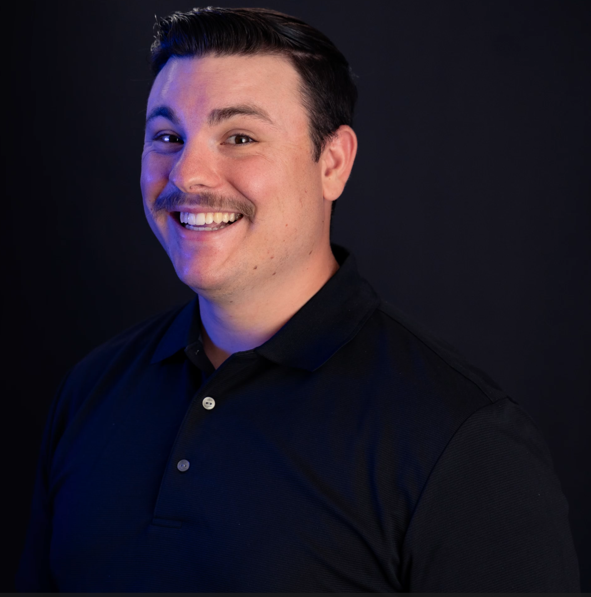

INDUSTRIAL DESIGNER
About the Spence.
Hello! I'm Spencer Cluff, a Senior Industrial Design student at Arizona State University, graduating in 2026. My passion lies in creating compelling products and experiences that blend high aesthetics with genuine user utility.
My work is heavily influenced by hard-surface modeling, technical aesthetics, and clean geometric forms.** I thrive on challenging conventional design norms, always pushing for solutions that are both visually striking and inherently functional.
Outside of school, I have gained valuable experience working with innovative companies like Pyro Studios and Bent Creative These collaborations have sharpened my skills in product visualization, concept ideation, and design refinement across diverse industries.
I am seeking to join a forward-thinking design team where I can contribute to projects that require a meticulous eye for detail and a fresh, technical perspective. Let's build something impactful!
